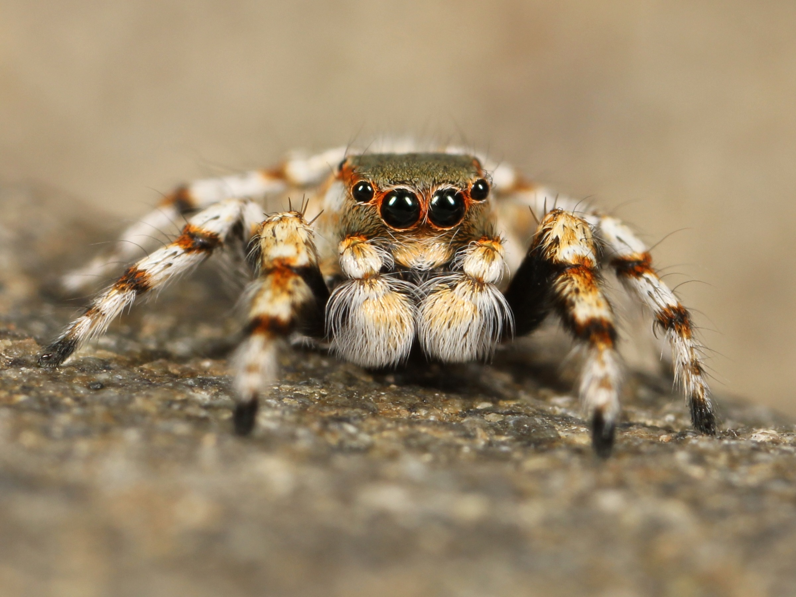
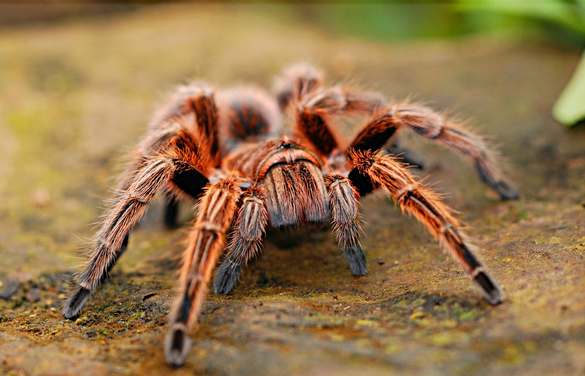
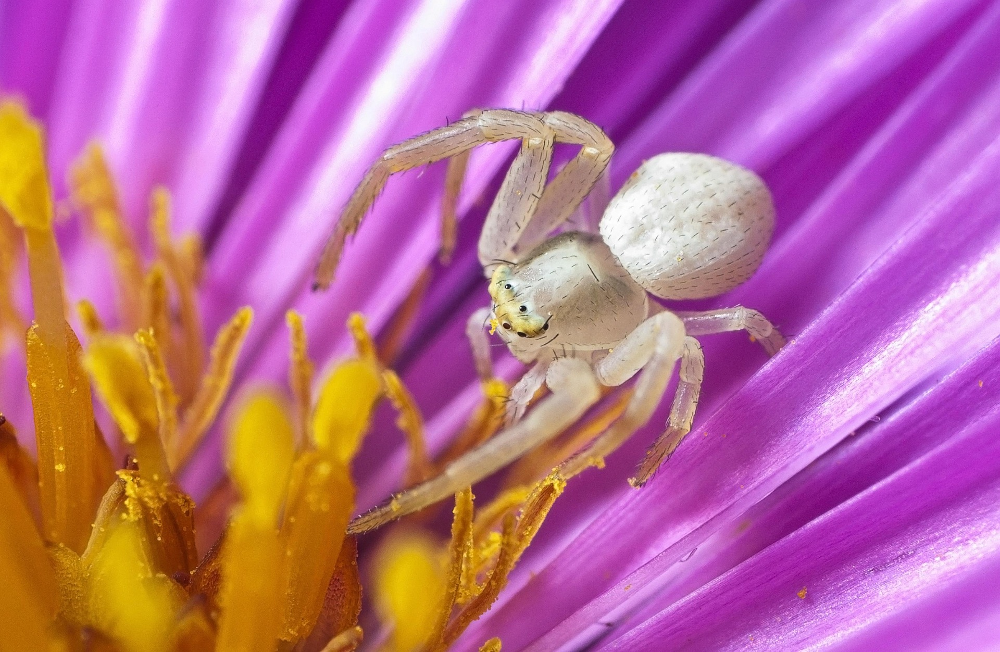
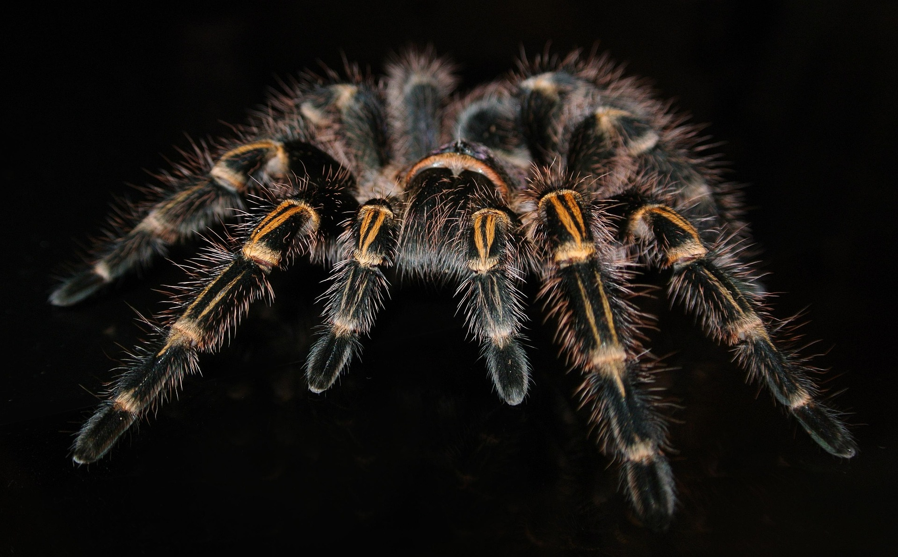

Pijavice
Pijavice je Skákavka Veliká. Tito pavouci dokáží přezkočit prostor který je 150x větší než jejich tělo

Pijavice je Skákavka Veliká. Tito pavouci dokáží přezkočit prostor který je 150x větší než jejich tělo

Karl je sklípkan. Sklípkani se schovávájí v norách celý svůj život a mají velmy zajímavý způsob lovení

Rosemarry Je malý běžník koprtinový. Tito pavouci se schovávájí v květinách kytek a vyčkávaji na opilovače.tento užasný kousek dokáže díky své kamufláži

Smrtka je Tarantule. Klasický a velký pavouk který dokáže zaútočit během pul sekundy